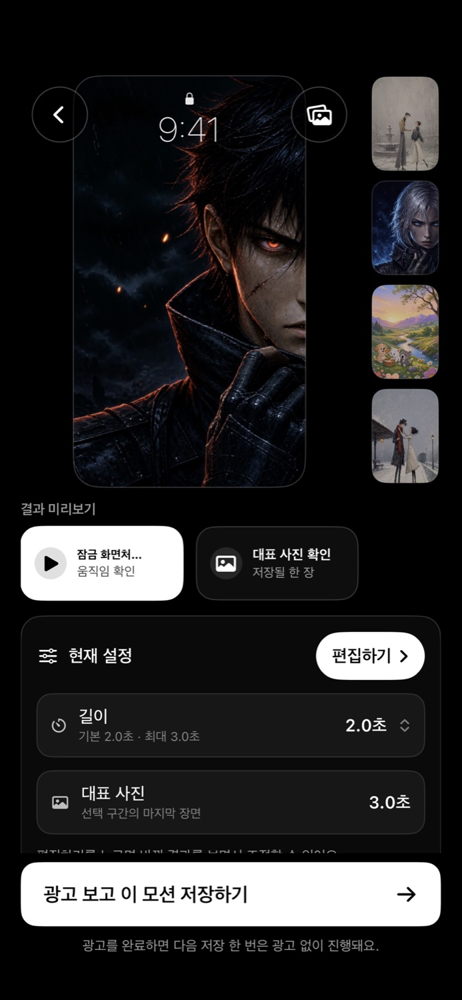
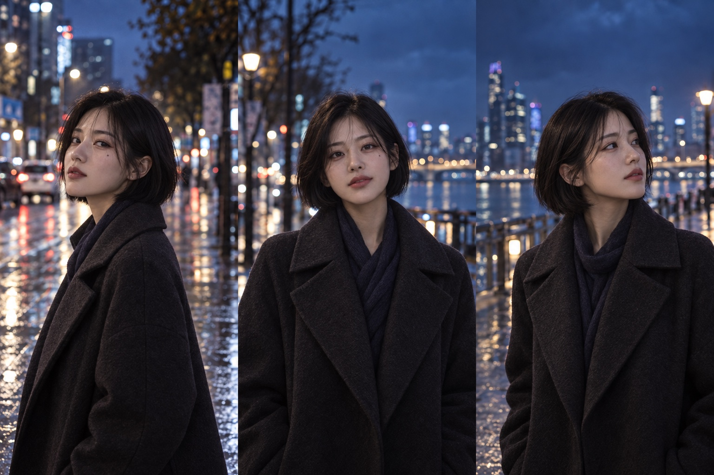

내 영상이,
잠금 화면으로.
좋아하는 영상의 한 순간을 Live Photo로.
iPhone을 깨울 때마다,
내가 고른 장면이 다시 움직입니다.
iPhone 전용 · 무료 · 앱 내 광고 포함

한 장은 대표 사진으로.
화면이 멈춰 있을 때 보여줄 사진을
영상 속에서 직접 고르세요.
움직임은 Live Photo로.
필요한 구간만 담아 사진 앱에 저장하고
잠금 화면에서 설정하세요.
새로운 장면이 필요할 땐.
앱에서 AI로 제작한 추천 모션을
둘러보고 다운로드할 수 있어요.
처음에는 기기 맞춤 촬영이 필요합니다.
잠금 화면 움직임은 영상·기기·iOS 환경에 따라 달라질 수 있습니다. Live Photo 결과에는 소리가 없습니다.
- 01
처음 한 번, 기기에 맞추기
앱 안내에 따라 짧게 촬영해 현재 iPhone에 맞는 기준을 준비해요.
- 02
동영상에서 좋은 순간 고르기
내 영상이나 다운로드한 추천 모션에서 1–3초 구간과 대표 사진을 정해요.
- 03
미리보고 Live Photo 저장
움직임을 확인하고 사진 앱에 저장해요. 필요하면 호환성 옵션으로 다시 시도할 수 있어요.
- 04
나만의 잠금 화면으로 설정
저장한 Live Photo를 iPhone의 잠금 화면으로 설정해요.

짧은 영상과 GIF까지.
Video Studio에서 구간, 비율, 속도와 소리를 조절하세요.
편집한 영상은 MP4 또는 GIF로 저장할 수 있어요.
내 사진은, 내 iPhone 안에.
선택한 사진과 영상, 피사체 분석과 변환 결과는 기기 안에서 처리합니다.
WakeMotion은 편집을 위해 개인 미디어를 서버에 업로드하지 않습니다.
궁금한 점이 있나요?
모든 동영상이 잠금 화면에서 움직이나요?
영상의 움직임, iPhone과 iOS 환경에 따라 다를 수 있습니다. 앱에서 짧은 구간을 고르고 미리보기를 확인해 주세요. 필요한 경우 호환성 옵션을 조절해 다시 저장할 수 있습니다.
무료로 사용할 수 있나요?
무료 앱이며 저장 과정에서 보상형 광고가 표시될 수 있습니다. 하단 배너와 인앱 구매는 없습니다.
처음 기기 맞춤 촬영은 왜 필요한가요?
현재 iPhone에서 직접 촬영한 Live Photo를 기준으로 저장 형식을 맞추기 위한 과정입니다. 원본은 사용 후 즉시 삭제되며, 기기에 저장한 기준 정보도 서버에 업로드하지 않습니다. 자세한 과정은 시작 가이드에서 확인하세요.
사진 접근과 광고 동의는 어떻게 관리하나요?
편집할 미디어는 시스템 선택기로 직접 고릅니다. 결과를 저장할 때는 사진 앱 추가 권한을 요청합니다. 광고 관련 정보와 동의 방법은 개인정보처리방침에서 확인할 수 있습니다.
내가 고른 장면으로
하루를 시작해요.
WakeMotion 무료 다운로드 당신의 다음 장면은 여기서 시작됩니다.